MODEL PORTFOLIO · ZARAGOZA, ESPAÑA
Keicy
Okenve.
EDITORIAL · MODA · PASARELA · CAMPAÑAS
Presencia natural, carácter y versatilidad. Una selección de imágenes entre la moda editorial, la sastrería contemporánea y el estilo urbano.
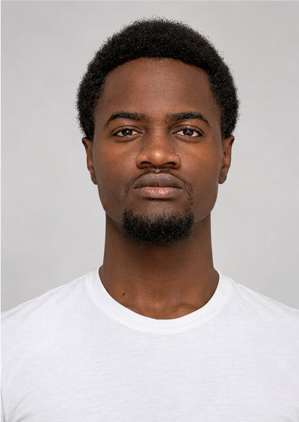
01 / EL MODELO
Perfil profesional
Silueta, carácter y una estética versátil.
Keicy Okenve, modelo con base en Zaragoza, interesado en proyectos de moda editorial, pasarela, lookbooks y campañas comerciales. Disponible para castings y propuestas profesionales.
Datos físicos
182Altura · cm
76,5Peso · kg
43Calzado · EU
Base: Zaragoza, España
Áreas: editorial · moda · pasarela · comercial
02 / FOTOGRAFÍAS DE CASTING
Digitals
Retratos, torso y cuerpo completo. Fotografías originales, sin alterar los rasgos.
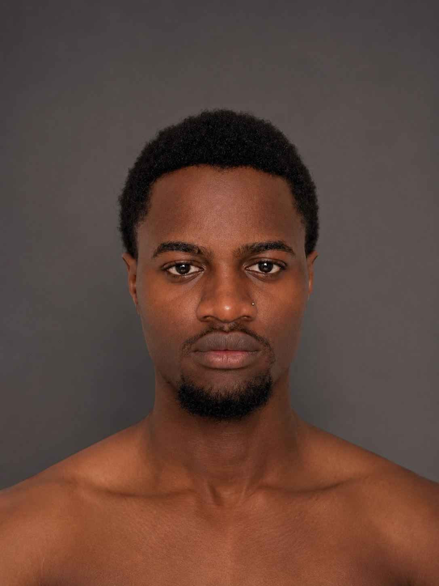
01 — Torso frontal
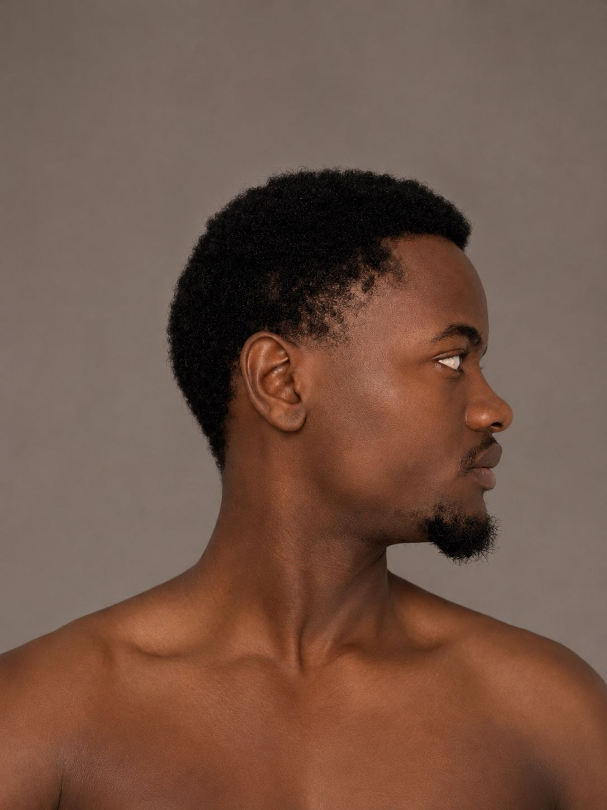
02 — Torso de perfil
03 — Retrato frontal
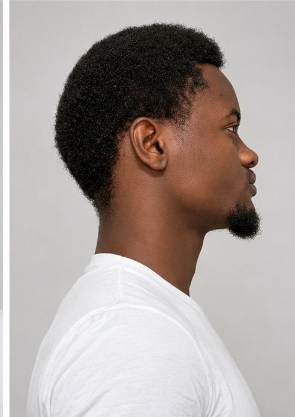
04 — Retrato de perfil
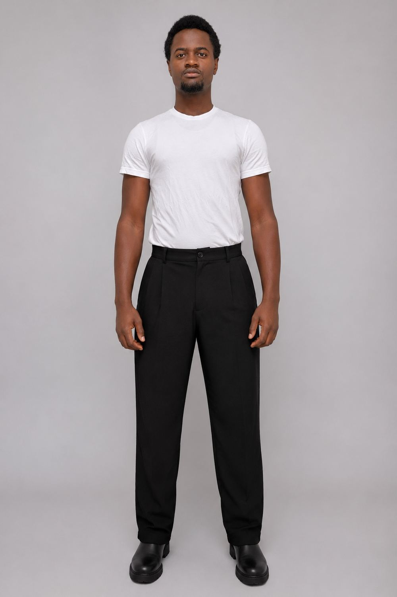
05 — Cuerpo completo frontal
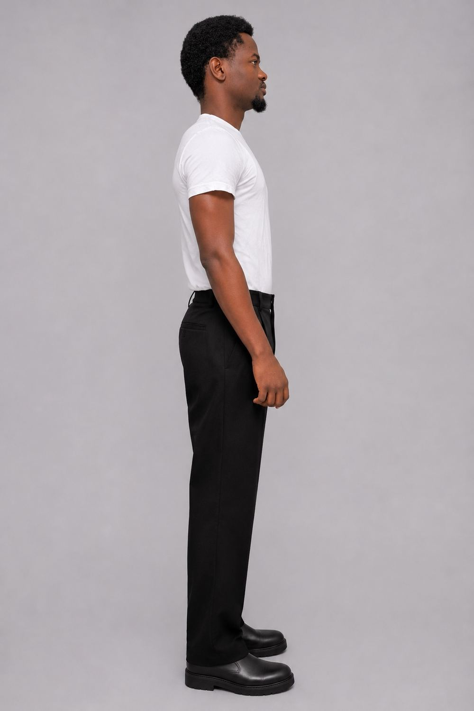
06 — Cuerpo completo de perfil
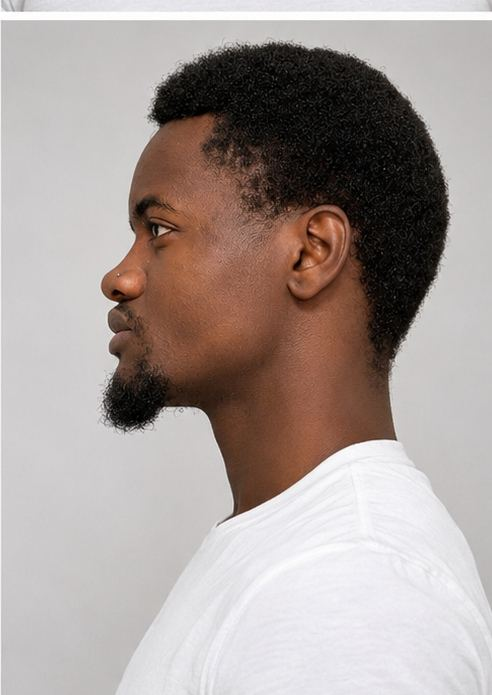
07 — Retrato lateral
Vista posterior y medidas de contorno: pendientes de nuevas fotografías.
03 / MODA
Editorial & fashion
Sastrería contemporánea, cuero y una actitud urbana.
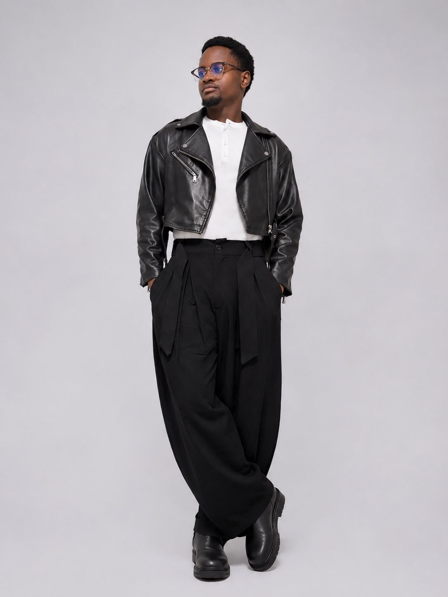
Leather / Statement
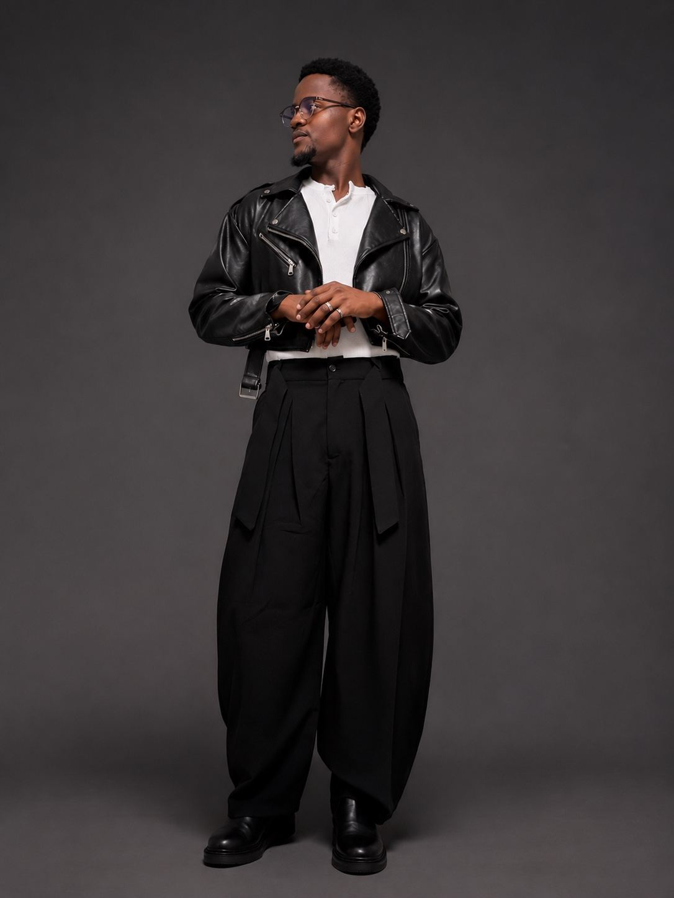
Modern tailoring
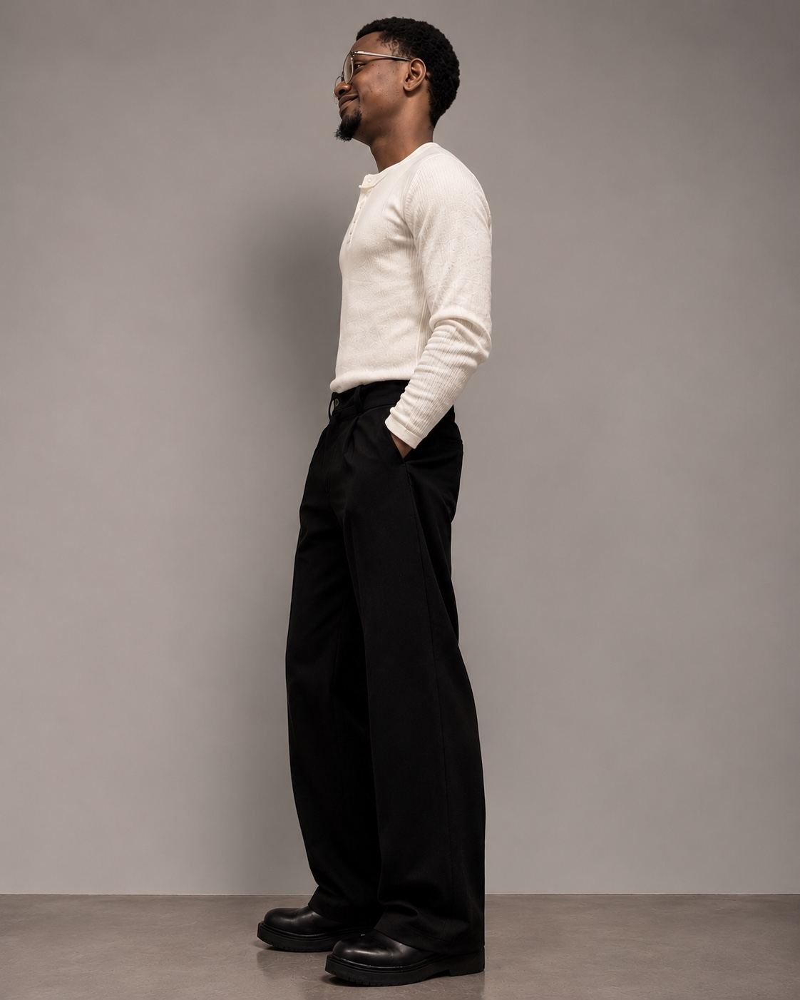
Studio / Silhouette
04 / LIFESTYLE
Urban presence
Una selección lifestyle para propuestas comerciales y editoriales.
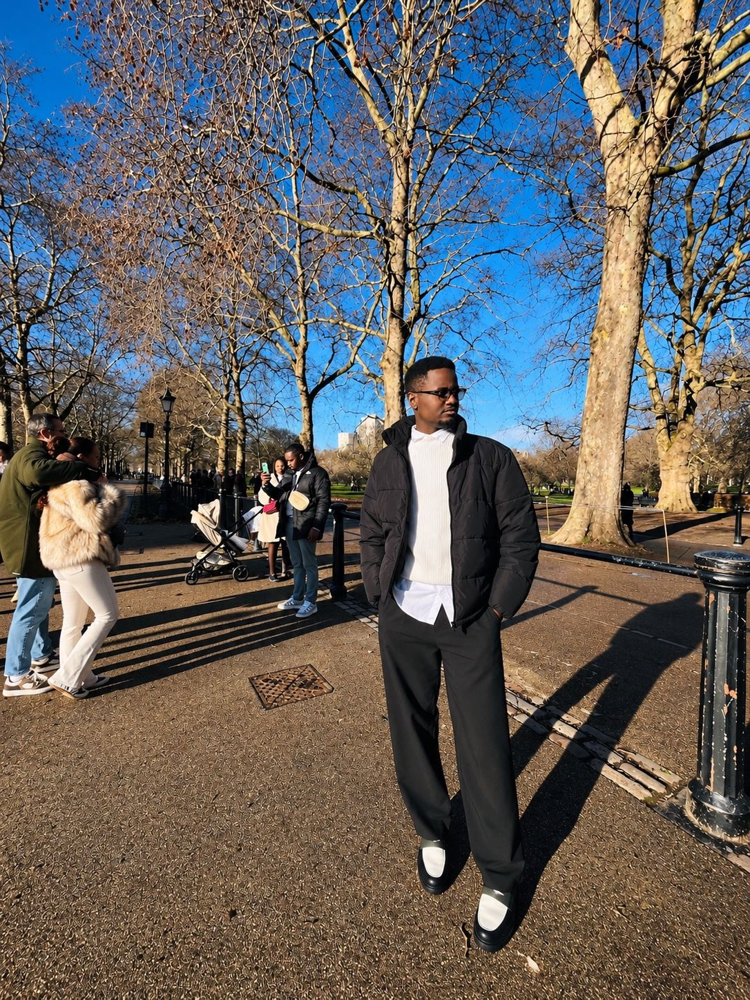
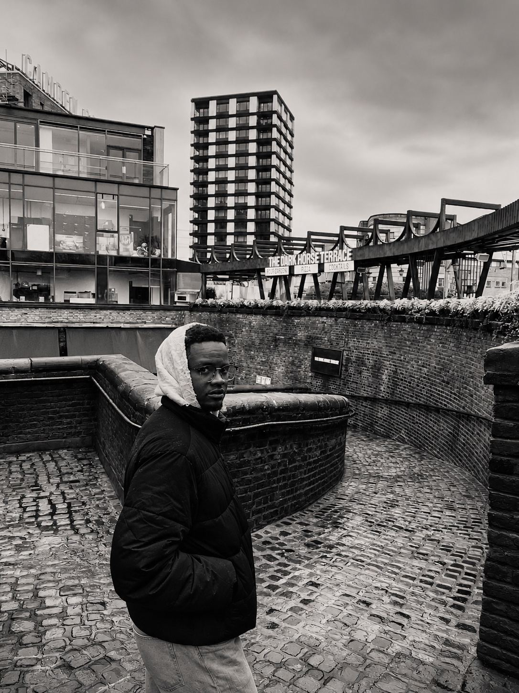
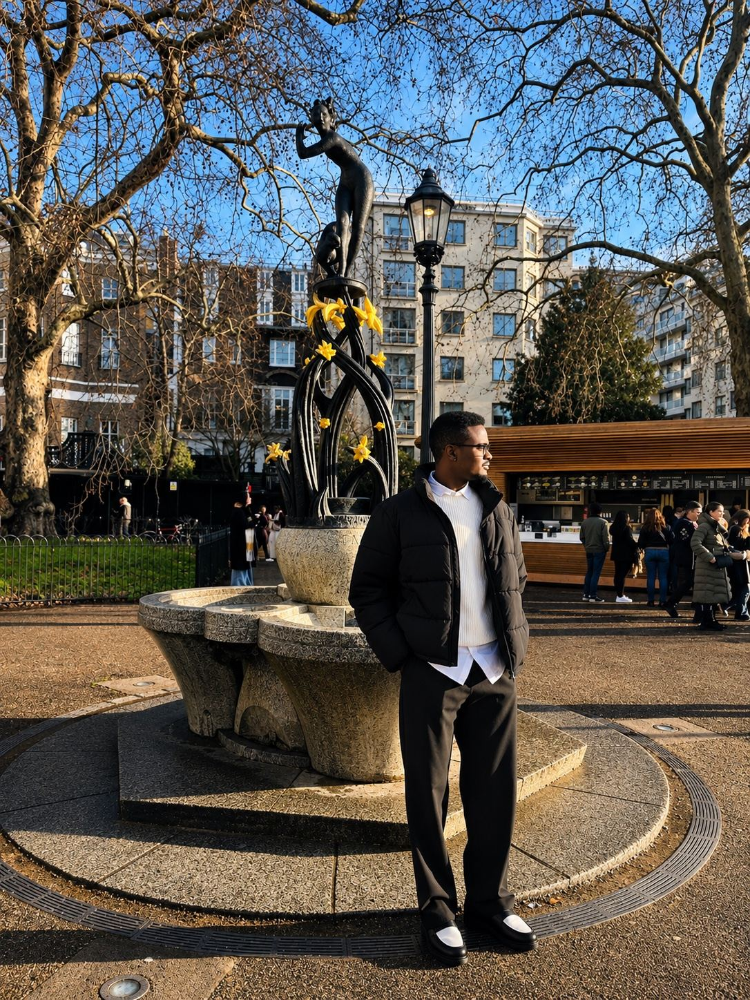
Consulta el book completo con la selección de imágenes y la ficha del modelo.
Abrir book PDF ↗05 / CONTACTO
Hablemos
de moda.
Disponible para castings, editoriales, pasarela, lookbooks y campañas comerciales. Para propuestas profesionales, puedes contactar a través de Instagram.
Contactar por Instagram ↗